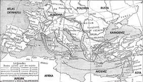

Tanrı Emri: Vurun İmansızlara!.. Ama İmansız Kim, İmansız Ne?
Haçlı Seferleri süreci, 1095’te başladı:
Ortadoğu ve Anadolu’daki toprakları İslam ordularına karşı verdiği sayısız savaşlarda yavaş yavaş elinden çıkan Doğu Roma İmparatorluğu, en stratejik savaş, 1071 Malazgirt Meydan Savaşı’nda Selçuklulara yenildikten sonra iyice zayıflamıştı.
Çaresiz kalan Doğu Roma İmparatoru Birinci Alexios Komnenos, sonradan çok pişman olacağı bir hata yaptı. 1095 yılı Mart ayında İtalya’nın Piacenza kentinde toplanan Katolik Konsili’ne gönderdiği elçiler aracılığıyla, Selçuklu Türklerinin fethettiği toprakları geri alabilmek için Latin Hıristiyanlardan askeri yardım talep etti.
Papa İkinci Urbanus, Clermont Konsili
Oysa o sırada Selçuklu Türkleri birbirine düşmüş, kurdukları devlet kendiliğinden parçalanıyor ve Komnenos biraz beklese, kaybettiği toprakları kendi gücüyle geri alabilecek, tarihin akışını da Doğu Roma’nın lehine değiştirebilecekti.
Ama Batı’daki din kardeşlerine güvenme gafletine düştü.
Piacenza’daki Konsil’e Konstantinopolis’ten gelen elçilerin İslam orduları önünde zor durumda kalan Doğu Hıristiyanlarına dair epeyce abartılı anlatıları, Latin Hıristiyan ruhbanını galeyana getirdi.

Haçlıların 8 sefer güzergâhı
(1922, Fransız haritası, beşinci ve altıncı sefer hariç)
Fransızların katılmadığı beşinci ve altıncı sefer hariç tutularak çizilen bu Haçlı
tarih haritasının 1922 tarihinde çizilmiş olması, Türkiye Cumhuriyeti’nin
kuruluş tarihi düşünüldüğünde dikkat
çekicidir.
Papa İkinci Urbanus, aynı yılın Kasım ayında Fransa’nın Clermont kentinde topladığı Konsil’de verdiği hamasi söylevle, Latin Romen ve Greko Romen cemaatleri arasındaki kardeş kavgasını bir yana koyarak ortak düşman İslamiyete karşı “kutsal savaş” açmaya çağırdı. Papa’nın hiçbir kral ya da otoriteyi muhatap almayarak doğrudan Hıristiyan şövalyelere yönelttiği çağrıyı, coşan kalabalıklar Deus lo volt! (Tanrı emri!) çığlıklarıyla yanıtladı.
Çok geçmeden, Haçlı gömleğini kuşanıp Kudüs yollarına düşmek ve Hıristiyan topraklarını “imansız”ların (Müslümanların) işgalinden kurtarma fikri, Hıristiyan Avrupa’nın hemen tüm krallıklarıyla derebeyliklerinde kabul gördü.
Haç ile Hilal’in kavgası başlamıştı.
Tarihteki ilk Avrupa ittifakı olan Latin Haçlıların “kutsal topraklar”a 1096’dan öteye başlayan seferleri, prensipte din kardeşliği dayanışmasıydı. Latin Haçlılar, bu toprakları geri alıp Doğu Roma’ya iadeyi ve tabii ki Müslümanların fethettiği Kudüs’ü yeniden Hıristiyan egemenliğine döndürmeyi amaçlıyordu.
Ne var ki Hıristiyan âleminde Roma uygarlığını “pagan” diye gömmüş ve uygarlıkta gerilemiş Latin Batı’nın, emperyal kültürü sürdüren Greko Romen Doğu’nun ileri uygarlığına karşı beslediği haset ile her iki cemaat arasında yüzyıllardır yükselerek süren husumet; prensipteki “din kardeşliği” dayanışmasına pratikte gönülsüz bir işbirliği, yer yer sürtüşme, hatta hesaplaşma fırsatı olarak yansıdı.
Haçlı orduları, tek komuta kademesine itaat eden düzenli ordular değildi. Avrupa’nın çeşitli krallık ve derebeyliklerinden, bazıları varını yoğunu satıp “din elden gidiyor” diye, bazıları ise tam tersine talanla servet edinmek için yollara düşen, birbirinden çok değişik soylardan oluşan savaşçı birlikleriydi.
Daha ilk seferde, Renanya Palatina’dan (Rhein-Pfalz) yola çıkan (Alman) Haçlılar, güzergâhları üstündeki yerleşkelere saldırarak, adeta sekiz yüzyıl sonra olacakların öncül işareti gibi, “Hıristiyanlığı kabul etmeyen” on iki bin dolayında Yahudiyi katletti! Yine güzergâhı üstünde bulduğu Baltık kökenli bazı pagan kabileleri aynı gerekçeyle kılıçtan geçirdi ve Anadolu’ya geçtiklerinde Doğu Roma tebaası yerel halkla çatıştılar, köyleri yaktılar vb.
Tabii karşılığında Doğulu Hıristiyanlar tarafından katledilen Haçlılar da oldu.
Ama tüm Haçlı orduları başıbozuk değildi. İmparator Komnenos’un yardımıyla Konstantinopolis üzerinden Anadolu’ya geçen ordular, eski imparatorluk başkenti İznik’i, Selçuklulardan geri alıp yeniden Doğu Roma’ya bağlanmasını sağladılar. Zaten verdikleri sözü, ilk ve son kez İznik’te tuttular.
Buradan sonra ip koptu.
Haçlı ordularına komuta eden oportünist soylular, güya Doğu Roma İmparatoru’na iade etmek için savaştıkları topraklara el koydular. Müslümanlardan geri alabildikleri Antep, Antakya, Trablusgarp ve Kudüs’te Latin Doğu devletleri diye anılan bağımsız kontluk, prenslik ve krallık kurdular.
Hatta müstakbel İngiliz Kralı Aslan Yürekli Richard, Kıbrıs Adası’nı Hıristiyan Doğu Roma’dan koparıp Kudüs’ün Latin Kralı Lüzinyanlı Guy’a satmak üzere gasp eden Haçlı komutanıydı!
Doğu Roma İmparatorluğu, Selçuklu Devleti’nin iktidar kavgasıyla zayıflamasından yararlanıp kaybettiği bazı toprakları kendi gücüyle geri alabildi. Ama kimi vilayetlerini de “İslam işgalinden kurtarmak için yardıma çağırdığı” Latin Hıristiyanlara kaptırmıştı.
İkinci Haçlı Seferi’nde Alman İmparatoru Konrad ve Fransız Kralı
Louis, Konstantinopolis’e girerken./Ressam: Jean Fouquet (1455 civarı)
Konstantinopolis tahtı, artık Doğu’da gözlediği düşmanın Hilal’li sancağı kadar, Batı’dan sökün edecek dostların Haçlı sancağını da endişeyle izlemek zorundaydı.
Selahaddin Eyyubi komutasındaki Müslüman orduların 1187’deki Hıttin Muharebesi’nde kazandığı zaferle, Kudüs’te 88 yıl süren Latin Hıristiyan egemenliğine son vermesi, Haçlı Seferleri tarihinde bir dönüm noktası oldu.
Üçüncü Haçlı Seferi’ni bizzat düzenleyen Aslan Yürekli Richard’ın Kudüs’ü Selahaddin Eyyubi’den geri alamayınca Doğu Roma egemenliğindeki Kıbrıs’a saldırıp gasp etmesiyle, Latin Haçlıların savaş amacı da ereği de yön değiştirdi.
Anadolu ve Trakya’daki Greko Romen Hıristiyan mülkü, hem Ortadoğu’daki “Kutsal Topraklar”dan daha geniş bir fetih alanıydı hem de daha zengin kutsal kalıtlar içeriyordu. Ayrıca Avrupa’nın göbeğinde de Papalığın otoritesini ve Latin Roma Kilisesi’nin dogmalarını inkâr eden Katharları da ezmek gerekiyordu.
Madem ki Haçlılar, dinlerine dış düşman Müslümanları yenemiyorlardı; onlar da Papa’nın otoritesini inkâr eden iç düşman, “sapkın” Hıristiyanlara saldırırlardı.
Burada sapkınlardan anlaşılan, Greko Romen Hıristiyan ritüellerine bağlı Doğu Roma ve Slav Kiliseleri ile zaten aynı cemaat içinde başlayıp Balkanlar üstünden Avrupa’ya yayılan Bogomil/Kathar öğretisiydi.
Dikkat ederseniz, buraya kadar hâlâ Latin Hıristiyanlara “Katolik”, Greko Romen Hıristiyanlara “Ortodoks” demedim, hiç...
Çünkü Roma ile Konstantinopolis ruhbanı arasında 1054’te yaşanan “dil bölünmesi”ne rağmen Hıristiyanlık âleminde kesin bir mezhep ayrışmasından henüz söz edilmiyordu. Gerek Ortodoks, gerekse Katolik sözcükleri Yunanca din terminolojisine ait olup her ikisi de Hıristiyanlık öğretisini betimleyen sıfatlardı.
13. yüzyıla kadar Hıristiyanlık âleminde Papalık tarafından cemaati “mülhid” ve “kâfir” ilanıyla aforoz edilen tek mezhep, Balkanlar’dan Britanya’ya kadar yayılan Bogomil öğretisiydi.
Ne var ki Papaların kendinden menkul iktidar ve önderliğine “Hıristiyanlık içre” muhalefetin ilk ciddi yapılanması Bogomil mezhebi, temelde Greko Romen Kiliseleri arasından sıyrılan teolojik bir akımdı. Zaten mezhebin Bosna ve Bulgaristan’dan başlayıp Avrupa’da yayılmasını sağlayan ruhban da Konstantinopolis Metropoliti Niketas’tı.
Hıttin Savaşı: Selahaddin Eyyubi ve Lüzinyanlı Guy
Metropolit Niketas, Latin kaynaklarında “Bogomil Papa” diye anılır. Yeni mezhebin 1167 yılında Fransa’nın Saint Felix de Caraman25 beldesinde toplanan yegâne din kurultayına ruhani lider sıfatıyla Konstantinopolis’ten gelip katılmıştır.
Başka bir deyişle, Avrupa’da yaşadıkları bölgelere göre Kathar ya da Patarini diye de anılan ve Papa tarafından aforoz edilen Bogomil mezhebi, Doğu Roma Hıristiyanlığının bir hizibi olsa da Konstantinopolis’le yakın ilişkiliydi. Ve Bogomillerin, Greko Romen Konstantinopolis Kilisesi’nin de baş belası olması, Latin Haçlılar için fark etmiyordu.
Papaların öncülüğünü tanımayan ve Latin Roma Kilisesi’ne bağlı olmayan bütün Hıristiyanlar sapkındı. Avrupa’nın ister içinde olsun, ister dışında, bu sapkınlara saldırmak, Müslümanlara saldırmak kadar kutsal bir savaştı!
Üstelik...
Doğu Roma’ya besledikleri kinde, kadim bir kıskançlığın da payı vardı.
1200’lü yıllara gelindiğinde, Doğu Roma İmparatorluğu gerileme dönemine girmesine ve yayıldığı coğrafya yavaş yavaş küçülmesine rağmen gerek zenginliği, gerekse uygarlığıyla hâlâ göz kamaştırıyordu.
Batık Batı Roma İmparatorluğu’nun küllerinden doğan devletler ise siyasal ve askerî anlamda güçlenmekteydi. Ne var ki bu ülkelerdeki saray debdebesiyle halkların yaşam standartları; inişe geçmiş ama hâlâ ayakta Doğu Roma İmparatorluğu’nun ulaştığı kurumsal ve kültürel seçkinlik düzeyinden henüz çok gerideydiler.
Başka bir deyişle bugün Avrupalı dediğimiz Hıristiyan toplumlar, o günkü Doğu Roma mülküne imreniyor, başkent Konstantinopolis’in efsaneleşen sanatsal birikim ve zenginliğine hem içerliyor hem de ağızlarının suyu akıyordu.
Örneğin Latin Hıristiyanlığın mızrakları sayılan Normanlar ve Germenler, Doğu Roma Hıristiyanlarını “hain, zengin ve kurnaz” olarak hasım bellemiş; Müslümanlara ise “sahte bir peygamberin peşine düşen sapkınlar” tanımıyla düşmanlık besliyorlardı.
1202’den sonra güya Kutsal Topraklar’a çıkılan toplam beş Haçlı Seferi, Doğu Roma İmparatorluğu mülkünü işgal, gasp ve talanla, Greko Romen Hıristiyanları boğazlamaya yaradı...
25 Bugünkü adıyla Saint Felix Lauragais (Fransa).